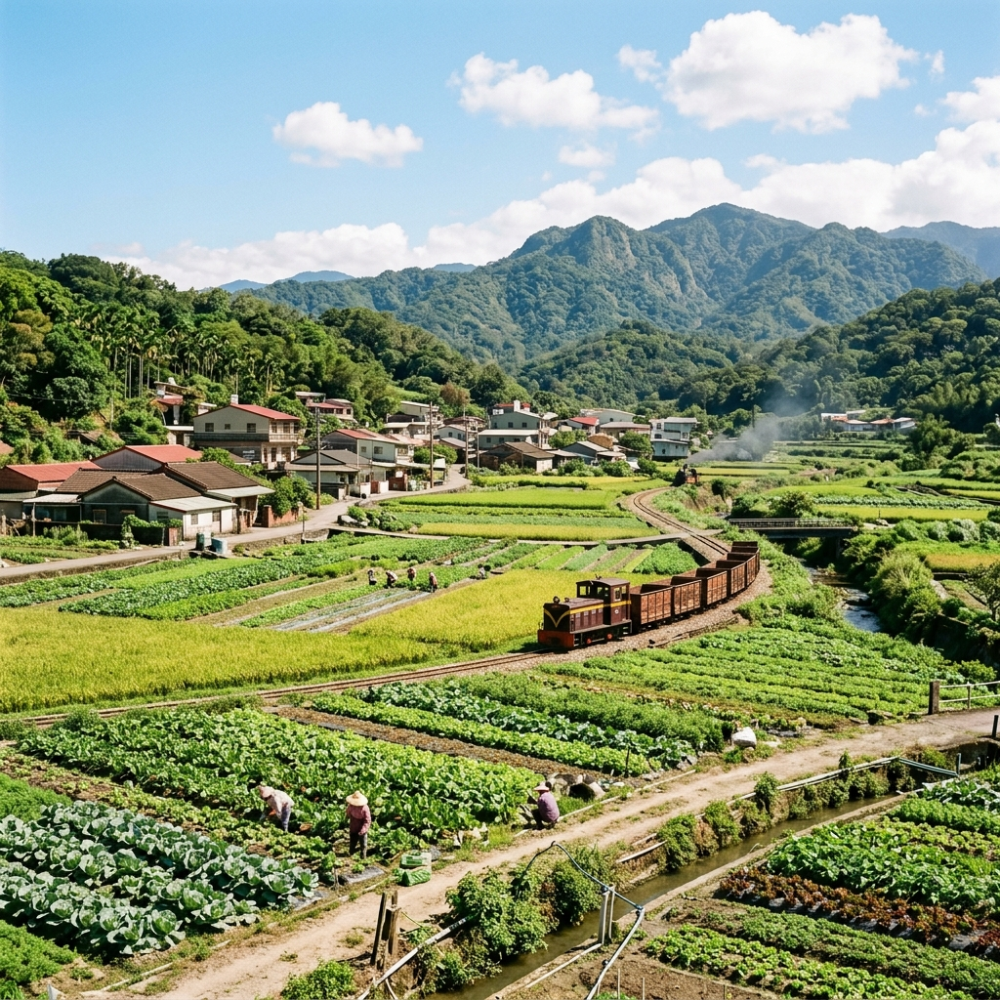

彰化縣溪湖鎮（人口第五大鄉鎮）與 高雄市前鎮區（人口第五大區），一個是孕育豐饒蔬果的平原中心，一個是帶動都會經濟的港區重鎮。點擊下方按鈕，探索兩地獨特的發展脈絡與風貌。

位於彰化平原幾何中心，屬於濁水溪沖積扇的一部分。身為彰化縣第五大鄉鎮，這裡不僅是早期農產品的重要交易中心，更是現今中台灣的「蔬果專區」。特產如韭菜花、羊肉爐及巨峰葡萄聞名全台。氣候溫和濕潤，充滿純樸的農業小鎮風光。
位於高雄市西南部，緊臨高雄港，亦為高雄市人口第五大區。從早期的傳統聚落到現代化的亞洲新灣區、高雄軟體園區及前鎮科技產業園區，前鎮區見證了台灣重工業與科技業的發展。區內大型購物中心林立，交通路網（捷運、輕軌）極為發達。
| 比較項目 | 溪湖鎮 (Xihu Township) | 前鎮區 (Qianzhen District) |
|---|---|---|
| 所屬縣市 | 彰化縣 | 高雄市 |
| 人口數量 | 約 5.3 萬人 (2025年底) | 約 17.7 萬人 (2025年底) |
| 行政層級人口排名 | 縣內第五大鄉鎮 | 市內第五大區 |
| 地理位置與地形 | 彰化平原中心、濁水溪沖積平原（平坦） | 高雄市西南部沿海、前鎮漁港與高雄港區（平坦） |
| 氣候類型 | 副熱帶季風氣候 | 熱帶季風氣候 |
| 產業重心 | 農業、蔬果專區、農產品交易 (韭菜花, 葡萄) | 科技產業、重工業(中鋼)、商業貿易、經貿園區 |
| 交通建設 | 公路為主 (近國道、省道交會) | 國道一號端點、高雄捷運紅線、環狀輕軌、渡輪 |
| 宗教信仰 | 媽祖信仰(福安宮等)、三山國王、雷神大帝、基督宗教等 | 紅毛港朝天宮、信徹禪寺、基督宗教等多元信仰 |
| 知名景點 | 溪湖糖廠觀光小火車、沐卉庇護農場、軍機公園、葡萄產業文化園區 | 統一夢時代、SKM Park、高雄展覽館、前鎮之星、前鎮漁港 |
| 地方特色 | 羊肉爐、韭菜花、葡萄、早期湖泊意象 | 亞洲新灣區、明鄭時期鎮營守地、繁華夜市(凱旋青年/光華) |